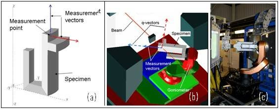

Introduction¶
SScanSS is requires three dimensional models of the sample and the instrument. The software manipulates these models enabling measurement points to be accurately positioned in sample space and simulations of scans to be performed.
Expected Usage¶
SScanSS can be used for planning prior to the experiment, setting-up during the experiment, and analysis after the experiment. A typical use of SScanSS is as follows:
Prior to beam time¶
- A model of the sample to be measured is generated, by either:
- LASER scanning the sample
- Exporting a model from a CAD package
- Generate a simple model from primitives e.g. sphere, cuboid etc
- The user specifies the desired measurement points in the sample model.
- The user specifies the desired strain components for each measurement point.
- The virtual instrument is selected and modified to reflect the users choice of (optional) hardware items such as collimators, jaw settings etc.
- The sample model is positioned within the virtual instrument and the scan is simulated. This simulation is performed in order to:
- determine how the sample should be oriented in order to measure the required components,
- determine feasibility, (are all measurement points accessible),
- estimate count times by checking path lengths, (can the measurement be performed in the available time).
During beam time¶
- The real sample is positioned on the instrument and its position measured and inputted into SScanSS.
- The positioning system offsets required to measure the selected points are generated automatically and the scan is performed.
- Data is analysed and new measurement points added, as required.
Post beam time¶
- SScanSS can archive all the information required to recreate the experimental setup, thereby assisting in the accurate interpretation of results.
- Results may be shown in the context of the model for example, by manually overlaying fields on the SScanSS virtual sample model.
Installation¶
Installers for Windows and Unix operating system can be download from the project’s release page. Software updates will also be accessible from the same page when available. While the software has not been tested on MacOS, you are welcome to try it, instructions to run the source code are available on github.
Issues¶
SScanSS 2 is released as a public beta and feedback is necessary to ensure a stable release if you experience any crashes or unexpected behaviours, do not hesitate to open an issue on the github.
Citing SScanSS 2¶
- J.A. James, J. R. Santisteban, L. Edwards and M. R. Daymond, “A virtual laboratory for neutron and synchrotron strain scanning,” Physica B: Condensed Matter, vol. 350, no. 1-3, p. 743–746, 2004.